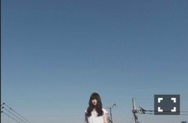
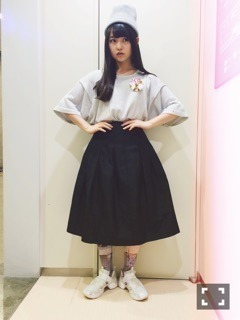

| 2015/04 13 Mon | 碧い朝。637回目 |

最近またたくさん写真撮った
メールやブログにちょこちょこちょこ
載せてゆきます〜
一昨日は国際フォーラムにて
「NARUTO THE LIVE Vol.0」！
過去のop曲 月の大きさを
久しぶりに披露しました。
今回は
命は美しい
何度目の青空か？
で奈々未ポジ務めました。
急遽でしたが、頑張りました。

昨日は東京ビックサイトで握手会！
関東は5部まで！
初めましての方がたくさんでした。
ありがとうございました！

ビーニー NewEra
Tシャツ used
スカート ？
タイツ bodysong.
スポーティー！
bodysong.のタイツは
チラ見せしました、
いつも柄が可愛い。
命は美しいの衣装にも可愛い柄が
ペプラムに入ってるんだよ〜
玲奈さん兼任お疲れ様でした！
5部終わりにセレモニーがありました。
玲奈さんがいること出る緊張感、
そしてどこか安心感がありました。
11thで選抜として一緒に活動できて
とても嬉しかったです。
玲奈さんのパフォーマンスと声と
スニーカースタイルが好きです。
人一倍忙しいのに、
乃木坂46でなくなるのが寂しい
と言ってくださる玲奈さんの
優しい人柄がとても好きです。
本当にお疲れ様でした。
そして、これからもどうぞ
よろしくお願いします ！！
......
4月9日 UTB＋
美彩、飛鳥と対談
ソログラビアのアザーカット掲載
4月10日 MARQUEE
飛鳥と "ツンデレラ"グラビア
ツンデレがテーマです！
教室の荒地興奮しました。
超ロングインタビューだった！
読んでほしいです！
4月12日 CUTiE
万理華の脳内♯2
4月15日 POKERFACE
伊織と
4月30日 月刊エンタメ
川後とペアグラビア
そして、
舞台じょしらく
モバイル先行受付スタートしました！
チームら
伊藤万理華
斉藤優里
星野みなみ
堀未央奈
山崎怜奈
6月18日 19:00
6月20日 13:00
6月21日 17:00
6月23日 19:00
6月27日 17:00
新番組、乃木坂工事中
よろしくお願いします！
まりか
コメント(594)
2015/04/13 12:18